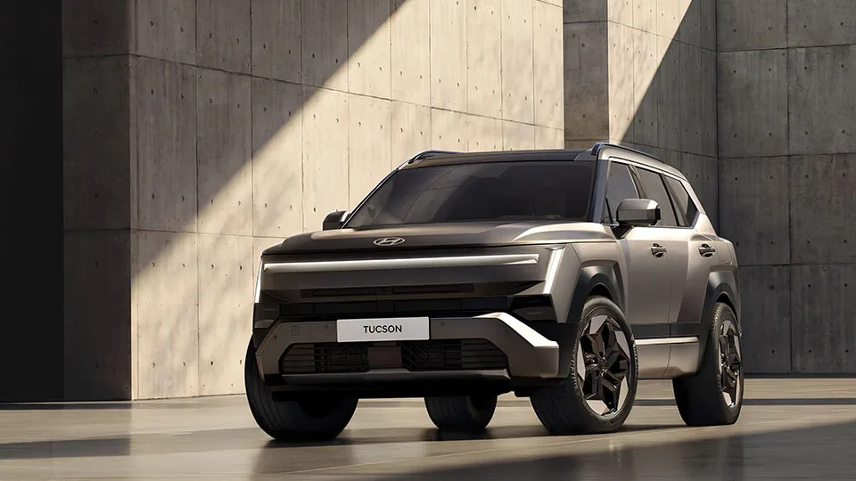
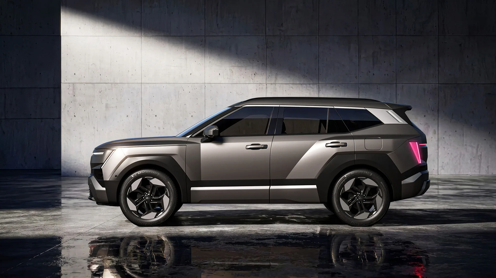
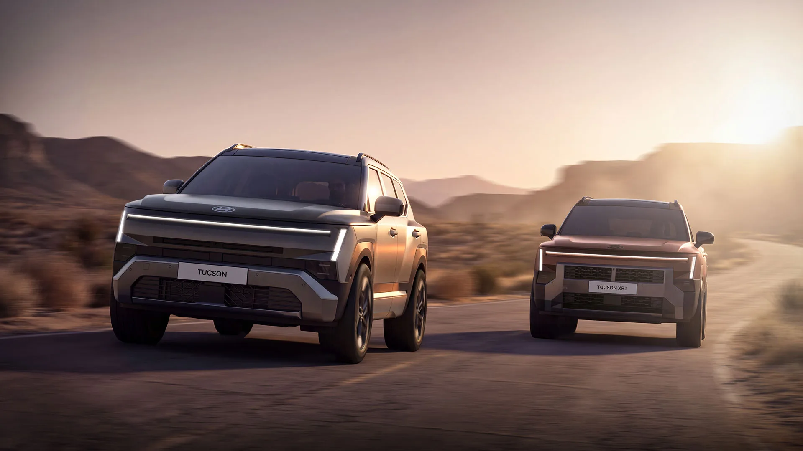
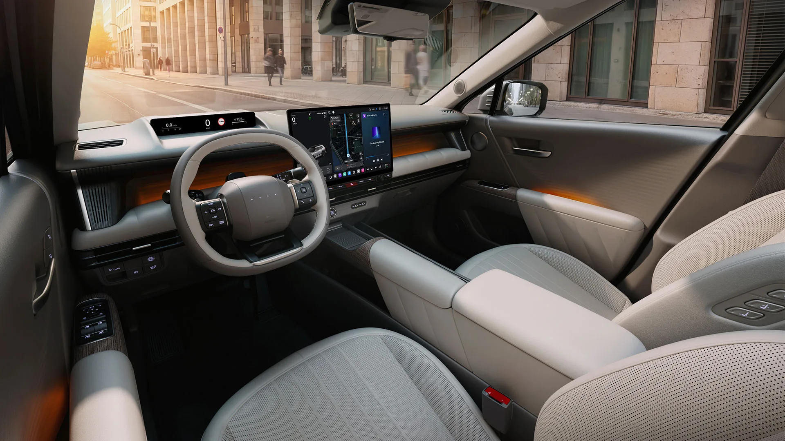
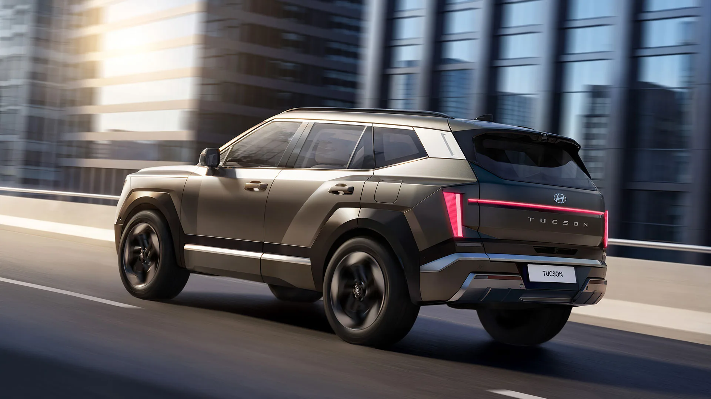

▲ 현대차가 6년 만에 완전변경한 5세대 '디 올 뉴 투싼(NX5)'. '아트 오브 스틸' 디자인 언어를 바탕으로 한층 강인한 인상을 갖췄다 ⓒ 현대자동차그룹
구형 투싼의 판매가 올해 들어 35% 넘게 고꾸라진 가운데, 현대차가 내놓은 답은 '더 크고, 더 똑똑한' 완전변경이었다. 그런데 정작 시장의 관심은 디자인이나 성능보다 '얼마에 나오느냐'에 쏠리고 있다.
현대자동차가 2026년 9월 18일 경기 파주시 CJ ENM 스튜디오 센터에서 미디어 데이를 열고 5세대 완전변경 모델 '디 올 뉴 투싼(NX5)'을 공개했다. 2020년 4세대 모델 출시 이후 6년 만의 세대교체다. 차체를 키우고 복합연비를 끌어올렸으며, 현대차 최초로 생성형 AI 에이전트를 인포테인먼트에 얹었다. 다만 원가 상승분을 반영하면 신형 가격이 5000만원 선에 육박할 수 있다는 전망이 나오면서, 정작 공개된 것은 차량이지만 업계와 소비자의 눈은 10월로 예정된 가격표에 쏠려 있다.
1. 왜 지금 '완전변경'인가 — 6년 만의 세대교체, 그리고 급감한 판매량
투싼은 현대차의 준중형 SUV 간판으로, 글로벌 누적 판매 1000만 대를 넘긴 스테디셀러다. 그런데 정작 국내에서는 최근 힘을 잃었다. 올해 1~8월 국내 판매량은 2만2384대로, 지난해 같은 기간(3만4555대) 대비 35.2% 감소했다. 특히 월별 판매는 1월 4269대에서 8월 526대까지 떨어지며 사실상 '신차 대기 수요'로 판매가 빠져나간 모습을 보였다.
| 구분 | 2025년 1~8월 | 2026년 1~8월 | 증감 |
|---|---|---|---|
| 누적 판매 | 3만4555대 | 2만2384대 | -35.2% |
| 1월 판매 | - | 4269대 | - |
| 8월 판매 | - | 526대 | - |
현대차는 이런 흐름 속에 5세대 완전변경 모델을 통해 반전을 꾀한다. 신형은 3세대 플랫폼을 기반으로 차체를 키우고, 디자인과 편의 사양, 파워트레인을 동시에 새로 짰다. "22년 역사를 담았다"는 현대차의 표현대로, 이번 세대교체에는 투싼을 준중형 SUV 최상위권으로 다시 끌어올리겠다는 의도가 담겨 있다.

▲ 신형 투싼의 측면부. 입체적인 펜더와 수평형 캐릭터 라인으로 볼륨감을 강조했다 ⓒ 현대자동차그룹
2. 디자인과 제원 — '아트 오브 스틸'로 커진 차체, 스포티지급 몸집
외관은 현대차의 디자인 철학 '아트 오브 스틸(Art of Steel)'을 기반으로 강인한 SUV 이미지를 강조했다. 전면에는 수직형 H-엣지 라이팅 주간주행등과 간접조명 방식의 수평형 슬림 센터 램프를 적용했고, 후면에는 3차원 입체감을 살린 프리즘 리어 램프를 얹었다. 측면은 입체적인 펜더와 수평형 캐릭터 라인으로 볼륨감을 표현했다.
| 항목 | 5세대(NX5) | 4세대 대비 |
|---|---|---|
| 전장 | 4700mm | +60mm |
| 전폭 | 1905mm | +40mm |
| 전고 | 1685mm | +20mm |
| 휠베이스 | 2785mm | +30mm |
| 2열 헤드룸 | 1031mm | +29mm |
| 2열 레그룸 | 1064mm | +14mm |
| 도어 개방각 | 83도 | +10도(기존 73도) |
| 적재공간 | - | +22ℓ |
커진 차체 덕분에 전장 기준으로는 사실상 기아 스포티지와 같은 체급에 들어섰다는 평가가 나온다. 현대차는 특히 2열 공간을 강조했는데, 헤드룸과 레그룸을 함께 늘리고 도어 개방각을 넓혀 "동급 최고 수준의 실내 공간"을 확보했다고 설명했다. 오프로드 감성을 강조한 별도 라인업 'XRT' 트림도 함께 공개됐다. 전용 디자인 요소와 블랙 휠 아치 가니시를 적용해 터프한 이미지를 낸다.

▲ 일반 트림(왼쪽)과 오프로드 감성을 강조한 XRT 트림(오른쪽). 전용 그릴과 범퍼 디자인으로 구분된다 ⓒ 현대자동차그룹
3. 파워트레인·연비 — 가솔린·하이브리드 2종, 하이브리드는 245마력·17.4km/L
신형 투싼은 1.6 터보 가솔린과 1.6 터보 하이브리드 2가지 파워트레인으로 운영된다. 가솔린 모델은 최고출력 193마력(+13마력), 최대토크 27.0kgf·m을 내며, 기존 7단 DCT 대신 새로 얹은 8단 자동변속기와 맞물린다. 하이브리드는 차세대 P1·P2 모터 직결 구조를 적용한 새 하이브리드 시스템으로 시스템 최고출력 245마력, 최대토크 38.7kgf·m을 발휘한다.
| 구분 | 1.6 터보 가솔린 | 1.6 터보 하이브리드 |
|---|---|---|
| 최고출력 | 193마력 | 시스템 245마력 |
| 최대토크 | 27.0kgf·m | 38.7kgf·m |
| 변속기 | 8단 자동(기존 7단 DCT 대체) | 차세대 P1·P2 모터 직결 구조 |
| 복합연비 | - | 17.4km/L(17인치·2WD 기준) |
하이브리드의 복합연비 17.4km/L는 기존 4세대 하이브리드 대비 1.2km/L 개선된 수치다. 차체가 커지고 무게가 늘었음에도 연비를 끌어올렸다는 점에서, 새 하이브리드 시스템의 효율 개선 폭이 작지 않다는 평가가 나온다. 안전 사양 중에서는 충돌로 주 전원이 차단돼도 예비 전원으로 도어 잠금을 해제할 수 있는 '도어 언락 전원 이중화' 기술이 현대차 최초로 적용됐다.
📍 디젤은 어떻게 됐나
이번 5세대 투싼 공개에서 디젤 파워트레인은 라인업에서 빠졌다. 가솔린과 하이브리드 2종 체제로 재편되며, 국내 판매 비중이 낮아진 디젤 대신 하이브리드 판매 비중을 끌어올리려는 현대차의 전동화 전략과 맞닿아 있다.
4. 생성형 AI 인포테인먼트 '플레오스 커넥트' — SUV 최초 탑재
이번 신형 투싼에서 가장 눈에 띄는 변화는 인포테인먼트다. 현대차 SUV 최초로 차세대 인포테인먼트 시스템 '플레오스 커넥트(Pleos Connect)'가 탑재됐다. 대형언어모델(LLM) 기반 생성형 AI 에이전트 '글레오 AI(Gleo AI)'를 통해 차량 제어, 지식 검색, 여행 일정 추천, 연속 대화 등을 지원한다. 외부 앱을 내려받을 수 있는 '플레오스 앱마켓'에서는 영상·음악·게임 등의 서비스를 이용할 수 있다.
✅ 플레오스 커넥트가 이전 인포테인먼트와 다른 점
· 단순 음성인식이 아닌 LLM 기반 생성형 AI로 연속 대화와 맥락 이해가 가능
· 차량 제어뿐 아니라 지식 검색·여행 일정 추천 등 '비서형' 기능 지원
· 외부 앱 다운로드가 가능한 '앱마켓' 구조로, 스마트폰처럼 확장 가능한 생태계 지향
· 현대차 SUV 라인업 중 투싼이 최초 적용 모델
실내에서는 대형 센터 디스플레이와 듀얼 무선충전 시스템, 별도 카드 홀더 등 일상 편의 사양도 강화됐다. 동급 최초로 적용된 '기억 후진 보조' 기능은 차량이 지나온 경로를 기억해 좁은 골목 등에서 후진을 돕는다.

▲ 신형 투싼 실내. 생성형 AI 에이전트 '글레오 AI'를 품은 '플레오스 커넥트' 인포테인먼트가 대형 디스플레이에 구현됐다 ⓒ 현대자동차그룹

▲ 운전석에서 바라본 신형 투싼 실내 디테일. 우드 톤 가니시와 앰비언트 라이팅으로 고급감을 살렸다 ⓒ 현대자동차그룹
현대차그룹 뉴스룸에서 디 올 뉴 투싼의 공식 발표 원문과 추가 이미지를 확인할 수 있다. 공식 뉴스룸 바로가기
5. '5000만원' 문턱 — 현대차가 가격 앞에서 고심하는 이유
차량은 공개됐지만, 가격은 아직이다. 현대차는 10월 중 정식 가격을 발표하고 국내 판매를 시작할 예정이다. 문제는 그 가격이 소비자 심리적 저항선인 '5000만원'에 근접할 수 있다는 전망이다.
현행 4세대 투싼 하이브리드 최상위 트림은 옵션을 포함하면 약 4756만원 수준이다. 신형은 차체 확대와 새 파워트레인, 생성형 AI 인포테인먼트 등 원가 상승 요인이 겹치면서 이보다 더 높은 5000만원 선을 넘어설 가능성이 거론된다. 업계 관계자는 "5000만원을 넘어설 경우 준중형 SUV가 아니라 싼타페, 그랜저 등 상위 차급으로 수요가 분산될 수 있다"고 지적했다.
| 쟁점 | 내용 |
|---|---|
| 기준가 | 4세대 하이브리드 최상위 트림(옵션 포함) 약 4756만원 |
| 전망 | 원가 상승분 반영 시 5000만원 선 근접 또는 돌파 가능성 |
| 리스크 | 5000만원 초과 시 싼타페·그랜저 등 상위 차급으로 수요 분산 우려 |
| 배경 | 구형 투싼 판매가 올해 35.2% 급감, 가격 경쟁력 회복이 시급한 상황 |
| 발표 일정 | 2026년 10월 중 국내 정식 가격 공개 |
결국 현대차 입장에서는 새로워진 상품성을 가격에 온전히 반영하고 싶지만, 그럴수록 구형 투싼에서 이미 겪은 '판매 급감'이 재현될 수 있다는 딜레마에 놓여 있다. 신형 투싼이 스포티지급으로 커진 몸집과 생성형 AI라는 상품성으로 소비자를 설득할 수 있을지, 아니면 가격 저항에 부딪힐지는 10월 가격 공개 이후 판가름날 전망이다.

▲ 신형 투싼의 후면부. 가로로 이어진 발광 리어 램프에 'TUCSON' 레터링을 적용했다 ⓒ 현대자동차그룹
6. 요약
현대차가 6년 만에 완전변경한 5세대 '디 올 뉴 투싼(NX5)'을 2026년 9월 18일 공개했다. 전장을 4700mm까지 키우고 휠베이스를 2785mm로 늘려 사실상 스포티지급 체격을 갖췄으며, 1.6 터보 가솔린과 1.6 터보 하이브리드 2가지 파워트레인을 마련했다. 하이브리드는 시스템 최고출력 245마력에 복합연비 17.4km/L를 기록한다.
가장 큰 변화는 인포테인먼트다. 현대차 SUV 최초로 생성형 AI 에이전트 '글레오 AI'를 품은 '플레오스 커넥트' 시스템이 탑재돼, 연속 대화와 지식 검색, 외부 앱 다운로드까지 지원한다.
다만 신형이 넘어야 할 관문은 가격이다. 구형 투싼의 국내 판매가 올해 35.2% 급감한 상황에서, 신형 가격이 5000만원 선에 근접할 것이라는 전망이 나오며 업계는 가격 책정에 고심하고 있다. 정식 가격은 2026년 10월 중 공개될 예정이다.